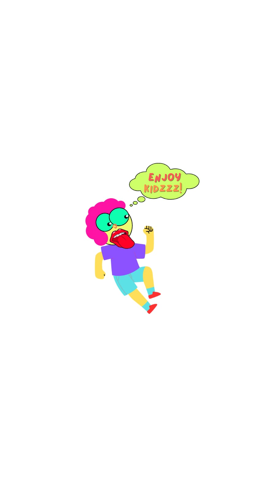

"Destroy to Create 2022" |

|
| 1 |
Name |
Enjoy Kidz |
| 2 |
Information |
Digital Pop Art |
| 3 |
Production |
Pamulang, Indonesia 2022 |
ENOUGH TOUCH |
Enjoy Kidz
awal mula terciptanya karya Digital POP ART ini Melainkan belajar sendiri atau secara otodiak.
"Sebetulnya Gue mendalami seni mural ini enggak ada yang ngajarin, otodidak aja. Bahkan memang sudah ada bakat menggambar sejak kecil".
Hasil Karya
BACK
© enough.touch